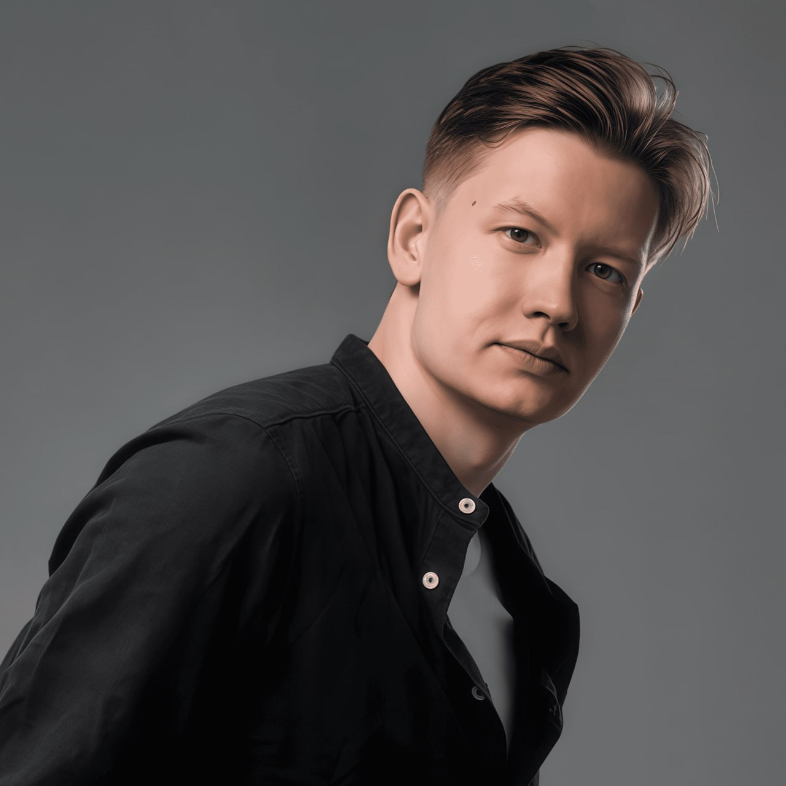

Физик-теоретик · Специалист по Geant4-DNA · Преподаватель
Исследую треки ионизирующих излучений, микродозиметрию и конформационные колебания ДНК. Разрабатываю модели в пакете Geant4-DNA и обучаю молодых специалистов физике частиц.
Моё кредо:

+7-902-569-66-20
Инструментарий теоретических исследований, симуляций и педагогики
Исследовательская деятельность в ТГУ и ОИЯИ
Валидация электромагнитных физических листов Geant4-DNA (Range, Stopping Power, Radial dose). Моделирование химических реакций радиолиза воды.
Исследование конформационных возмущений модели Муто молекулы ДНК. Доказательство существования «открытого состояния» вейвлет-анализом в Maple.
Валидация радиального распределения дозы и ЛПЭ тяжелых ионов в Geant4 11.3. Применение K-Means и DBSCAN для анализа разрывов ДНК.
Валидация ионизационных кластеров (ICSD), визуализация структуры трека (core vs. penumbra) и подготовка среды валидации для Medical Physics.
Научные статьи и выступления на российских и международных форумах
Применение потенциалов Тоды и Леннард-Джонса с непрерывным вейвлет-преобразованием.
Оптимизация модели ионизации Радда в Geant4-DNA с 2x ускорением симуляции.
Математическое моделирование и компьютерная физика
Доклад по геометриям макромолекул в Geant4-DNA в ОИЯИ.
22-я Ломоносовская конференция по физике элементарных частиц
XXVIII Конференция молодых ученых и специалистов ОИЯИ
Онлайн-курсы и работа с одаренными школьниками
Авторский интерактивный курс на платформе Stepik с заданиями по Стандартной модели.
Интенсивная подготовка школьников к ВсОШ по теоретической механике и термодинамике.